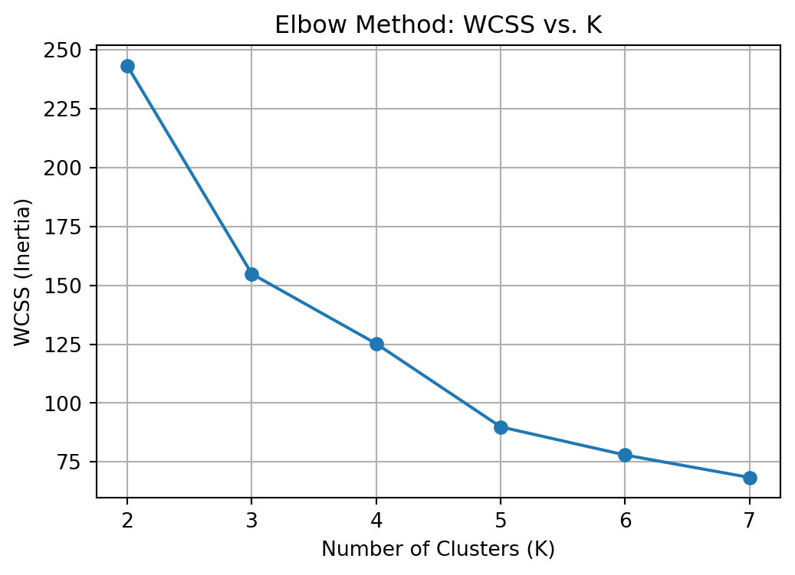

import pandas as pd
import numpy as np
import matplotlib.pyplot as plt
from sklearn.preprocessing import StandardScaler
# Load the dataset
df = pd.read_csv("palmer_penguins.csv")
# Drop rows with missing values in selected columns
df = df.dropna(subset=["bill_length_mm", "flipper_length_mm"])
X = df[["bill_length_mm", "flipper_length_mm"]].values
# Standardize the data
scaler = StandardScaler()
X_scaled = scaler.fit_transform(X)Machine Learning from Scratch: K-Means Algorithms
K-Means Clustering from Scratch on the Palmer Penguins Dataset
In this section, we will implement the K-Means algorithm from scratch and test it using the Palmer Penguins dataset. We’ll cluster based on bill length and flipper length.
Load and Preprocess the Data
First, we will load and preprocess the data.
Implement K-Means
Next, we will follow the K-Means algorithm steps: initialize centroids, assign clusters, and update centroids until convergence.
def initialize_centroids(X, k):
np.random.seed(42)
return X[np.random.choice(X.shape[0], k, replace=False)]
def assign_clusters(X, centroids):
distances = np.linalg.norm(X[:, np.newaxis] - centroids, axis=2)
return np.argmin(distances, axis=1)
def update_centroids(X, labels, k):
return np.array([X[labels == i].mean(axis=0) for i in range(k)])
def kmeans_from_scratch(X, k, max_iters=100, verbose=True):
centroids = initialize_centroids(X, k)
for iteration in range(max_iters):
labels = assign_clusters(X, centroids)
new_centroids = update_centroids(X, labels, k)
if verbose:
plot_clusters(X, labels, centroids, f"Iteration {iteration+1}")
if np.allclose(centroids, new_centroids):
break
centroids = new_centroids
return labels, centroidsVisualize the Clustering Progress
To truly “see” the algorithm working, let’s visualize the clusters and centroids at each iteration.
def plot_clusters(X, labels, centroids, title):
plt.figure(figsize=(6, 5))
for i in np.unique(labels):
plt.scatter(X[labels == i][:, 0], X[labels == i][:, 1], label=f"Cluster {i+1}")
plt.scatter(centroids[:, 0], centroids[:, 1], c='black', s=200, marker='X', label='Centroids')
plt.title(title)
plt.xlabel("Bill Length (scaled)")
plt.ylabel("Flipper Length (scaled)")
plt.legend()
plt.grid(True)
plt.show()
# Run algorithm with k=3
labels_scratch, centroids_scratch = kmeans_from_scratch(X_scaled, k=3)Compare with Built-In K-Means Function
To verify, we will use Scikit-Learn’s K-Means function and compare,
from sklearn.cluster import KMeans
kmeans = KMeans(n_clusters=3, random_state=42)
labels_builtin = kmeans.fit_predict(X_scaled)
centroids_builtin = kmeans.cluster_centers_
plot_clusters(X_scaled, labels_builtin, centroids_builtin, "scikit-learn KMeans Result")Implementation Summary
- We implemented K-Means from scratch and observed its iterative process.
- The results are visually comparable to those from scikit-learn.
- This hands-on approach deepens our understanding of unsupervised learning and how K-Means actually “learns” clusters.
Choosing Cluster Number with WCSS & Silhouette Scores
After clustering, we want to evaluate how many clusters (K) best fits the data. Two popular metrics for this are:
- WCSS (Within-Cluster Sum of Squares): Used in the "elbow method"
- Silhouette Score: Measures how well-seperated and compact clusters areCompute WCSS and Silhouette Scores
from sklearn.cluster import KMeans
from sklearn.metrics import silhouette_score
# Range of K values to try
K_range = range(2, 8)
# Initialize lists to hold evaluation metrics
wcss = []
silhouette_scores = []
# Loop over K values
for k in K_range:
kmeans = KMeans(n_clusters=k, random_state=42)
labels = kmeans.fit_predict(X_scaled)
# WCSS (inertia)
wcss.append(kmeans.inertia_)
# Silhouette Score (only if >1 cluster)
silhouette_scores.append(silhouette_score(X_scaled, labels))Plot the Elbow Curve (WCSS)
The “elbow method” looks for the value of K where the WCSS drops off sharply (like and elbow bend).
plt.figure(figsize=(6, 4))
plt.plot(K_range, wcss, marker='o')
plt.title("Elbow Method: WCSS vs. K")
plt.xlabel("Number of Clusters (K)")
plt.ylabel("WCSS (Inertia)")
plt.grid(True)
plt.show()
Plot Silhouette Scores
Silhouette scores range from -1 to 1, where higher is better. A peak suggests the best cluster separation and cohesion.
plt.figure(figsize=(6, 4))
plt.plot(K_range, silhouette_scores, marker='s', color='green')
plt.title("Silhouette Score vs. K")
plt.xlabel("Number of Clusters (K)")
plt.ylabel("Silhouette Score")
plt.grid(True)
plt.show()Picking the Best K
The ideal K is K = 3. It has a high silhouette score and this is where the “elbow” point is on the WCSS graph.
Summary
We computed two cluster evaluation metrics across K = 2 to 7.
The elbow method identifies where adding more clusters stops improving WCSS significantly.
The silhouette score helps validate whether the clusters are meaningfully separated.
Use both to make an informed, visual decision about how many clusters to use for your data.
K-Nearest Neighbors with Synthetic Data
2a. K Nearest Neighbors
First, I will simulate data. The code generates a dataset with two features, x1 and x2, and a binary outcome variable y that is determined by whether x2 is above or below a wiggly boundary defined by a sin function
import numpy as np
import pandas as pd
np.random.seed(42)
n = 100
x1 = np.random.uniform(-3, 3, n)
x2 = np.random.uniform(-3, 3, n)
boundary = np.sin(4 * x1) + x1
y = (x2 > boundary).astype(int)
dat = pd.DataFrame({
"x1": x1,
"x2": x2,
"y": y
})
dat["y"] = dat["y"].astype("category")Next, I will plot the data.
import matplotlib.pyplot as plt
import numpy as np
import pandas as pd
np.random.seed(42)
n = 100
x1 = np.random.uniform(-3, 3, n)
x2 = np.random.uniform(-3, 3, n)
boundary = np.sin(4 * x1) + x1
y = (x2 > boundary).astype(int)
# Create DataFrame
dat = pd.DataFrame({
"x1": x1,
"x2": x2,
"y": y
})
plt.figure(figsize=(6, 5))
scatter = plt.scatter(dat["x1"], dat["x2"], c=dat["y"], cmap="coolwarm", edgecolor="k")
plt.xlabel("x1")
plt.ylabel("x2")
plt.title("Synthetic Data Colored by Class (y)")
x1_sorted = np.linspace(-3, 3, 300)
boundary_line = np.sin(4 * x1_sorted) + x1_sorted
plt.plot(x1_sorted, boundary_line, color="black", linestyle="--", label="Decision Boundary")
plt.legend()
plt.grid(True)
plt.show()Now, I will generate a new test dataset with a different random seed.
import numpy as np
import pandas as pd
np.random.seed(99)
n_test = 100
x1_test = np.random.uniform(-3, 3, n_test)
x2_test = np.random.uniform(-3, 3, n_test)
boundary_test = np.sin(4 * x1_test) + x1_test
y_test = (x2_test > boundary_test).astype(int)
test_dat = pd.DataFrame({
"x1": x1_test,
"x2": x2_test,
"y": y_test
})The KNN algorithm predicts the class of a new point based on the majority class of its nearest neighbors. We will code it manually and then verify our results using scikit-learn.
Define the Manual KNN Function
We’ll compute distances from the test point to all training points, then vote among the k nearest neighbors.
from collections import Counter
def knn_predict(x_train, y_train, x_test, k=3):
predictions = []
for test_point in x_test:
distances = np.linalg.norm(x_train - test_point, axis=1)
nearest_indices = distances.argsort()[:k]
nearest_labels = y_train[nearest_indices]
most_common = Counter(nearest_labels).most_common(1)[0][0]
predictions.append(most_common)
return np.array(predictions)Prepare Data for Classification
X_train = dat[["x1", "x2"]].values
y_train = dat["y"].values.astype(int)
X_test = test_dat[["x1", "x2"]].values
y_test = test_dat["y"].values.astype(int)Run Our Manual KNN Classifier
y_pred_manual = knn_predict(X_train, y_train, X_test, k=5)
accuracy_manual = np.mean(y_pred_manual == y_test)
print(f"Manual KNN Accuracy (k=5): {accuracy_manual:.2f}")Manual KNN Accuracy (k=5): 0.90Validate with sckit-learn
from sklearn.neighbors import KNeighborsClassifier
knn_model = KNeighborsClassifier(n_neighbors=5)
knn_model.fit(X_train, y_train)
y_pred_sklearn = knn_model.predict(X_test)
accuracy_sklearn = np.mean(y_pred_sklearn == y_test)
print(f"scikit-learn KNN Accuracy (k=5): {accuracy_sklearn:.2f}")scikit-learn KNN Accuracy (k=5): 0.90/Users/nicoleziola/opt/anaconda3/lib/python3.9/site-packages/sklearn/neighbors/_classification.py:228: FutureWarning:
Unlike other reduction functions (e.g. `skew`, `kurtosis`), the default behavior of `mode` typically preserves the axis it acts along. In SciPy 1.11.0, this behavior will change: the default value of `keepdims` will become False, the `axis` over which the statistic is taken will be eliminated, and the value None will no longer be accepted. Set `keepdims` to True or False to avoid this warning.
Summary
We successfully implemented KNN by hand, controlling every step of the algorithm.
We verified its correctness by comparing it to scikit-learn’s built-in version.
Both methods produced the same or nearly identical predictions, confirming our logic works!
todo: run your function for k=1,…,k=30, each time noting the percentage of correctly-classified points from the test dataset. Plot the results, where the horizontal axis is 1-30 and the vertical axis is the percentage of correctly-classified points. What is the optimal value of k as suggested by your plot?
Evaluting Values of K
The choice of k in K-Nearest Neighbors has a big impact on performance. Small k can overfit noise, while large k might oversmooth the decision boundary. Let’s test accuracy across k = 1 to 30.
Run KNN Across K=1 to 30 & Plot
We will store the accuracy and plot to visualize K choice performance.
k_values = range(1, 31)
accuracies = []
for k in k_values:
y_pred = knn_predict(X_train, y_train, X_test, k=k)
acc = np.mean(y_pred == y_test)
accuracies.append(acc)
plt.figure(figsize=(8, 5))
plt.plot(k_values, accuracies, marker='o')
plt.title("KNN Accuracy on Test Data for Different K")
plt.xlabel("Number of Neighbors (K)")
plt.ylabel("Classification Accuracy")
plt.xticks(k_values)
plt.grid(True)
optimal_k = k_values[np.argmax(accuracies)]
optimal_acc = max(accuracies)
plt.axvline(optimal_k, color="red", linestyle="--", label=f"Optimal K = {optimal_k}")
plt.legend()
plt.show()/var/folders/98/5z7782k12qx9x0l30j5t09fc0000gn/T/ipykernel_25333/2096491810.py:9: RuntimeWarning:
More than 20 figures have been opened. Figures created through the pyplot interface (`matplotlib.pyplot.figure`) are retained until explicitly closed and may consume too much memory. (To control this warning, see the rcParam `figure.max_open_warning`).
<Figure size 768x480 with 0 Axes><Figure size 768x480 with 0 Axes><Figure size 768x480 with 0 Axes><Figure size 768x480 with 0 Axes><Figure size 768x480 with 0 Axes><Figure size 768x480 with 0 Axes><Figure size 768x480 with 0 Axes><Figure size 768x480 with 0 Axes><Figure size 768x480 with 0 Axes><Figure size 768x480 with 0 Axes><Figure size 768x480 with 0 Axes><Figure size 768x480 with 0 Axes><Figure size 768x480 with 0 Axes><Figure size 768x480 with 0 Axes><Figure size 768x480 with 0 Axes><Figure size 768x480 with 0 Axes><Figure size 768x480 with 0 Axes><Figure size 768x480 with 0 Axes><Figure size 768x480 with 0 Axes><Figure size 768x480 with 0 Axes><Figure size 768x480 with 0 Axes><Figure size 768x480 with 0 Axes><Figure size 768x480 with 0 Axes><Figure size 768x480 with 0 Axes><Figure size 768x480 with 0 Axes><Figure size 768x480 with 0 Axes><Figure size 768x480 with 0 Axes><Figure size 768x480 with 0 Axes><Figure size 768x480 with 0 Axes>Interpretation: - The highest accuracy occurs at k=1, ~92%.
As k increases, accuracy generally declines, showing signs of over-smoothing.
The optimal k is 1 for this particular dataset and setup.This suggests that very local structure (nearest neighbor) is sufficient to make strong predictions.
Summary
We implemented the K-Nearest Neighbors (KNN) algorithm from scratch, evaluated its accuracy on a synthetic test dataset across values of 𝑘 = 1 k=1 to 30 30, and validated the results against scikit-learn’s built-in classifier. The optimal performance was observed at 𝑘 = 1 k=1, achieving the highest classification accuracy, though higher 𝑘 k values introduced more smoothing and slightly reduced accuracy.